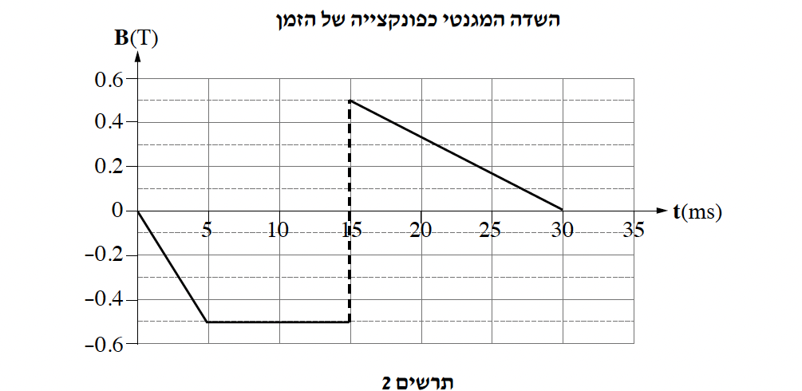
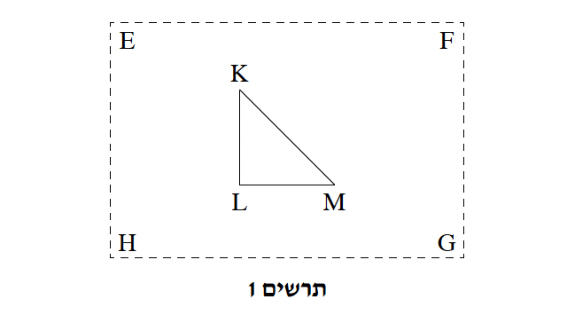
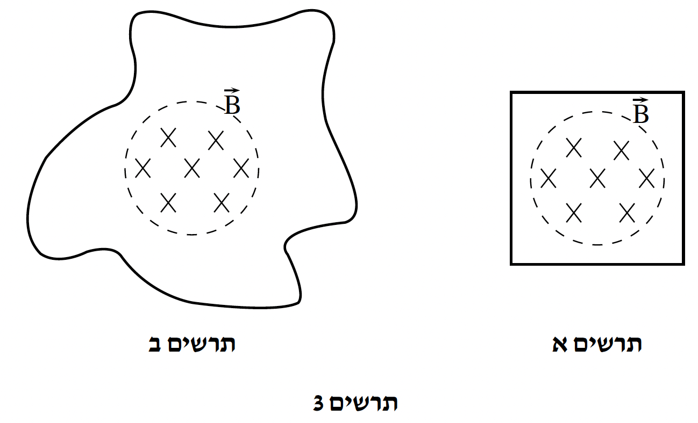

שאלה 6
נתון תיל מוליך KLM שצורתו משולש ישר זווית ושווה שוקיים, כמתואר בתרשים 1. התיל נמצא בתוך שדה מגנטי אחיד השורר באזור מלבני EFGH. עוצמתו של השדה המגנטי משתנה עם הזמן, וכיוונו מאונך למישור
המשולש KLM.
נתון: התנגדות התיל היא R = 1.2Ω. שטח המשולש שנוצר על ידי התיל הוא SKLM = 100cm2.
הגרף שבתרשים 2 מתאר את השדה המגנטי כפונקצייה של הזמן (שימו לב ליחידות המידה).


נתון כי בפרק הזמן 0 < t < 5ms, זורם בתיל זרם חשמלי מושרה שכוונו מ-L ל-M.
מהו הכיוון של השדה המגנטי המושרה בתוך המשולש בפרק זמן זה - לתוך מישור הדף או החוצה ממנו? (4 נקודות)
מהו הכיוון של השדה המגנטי האחיד בפרק זמן זה? נמקו את קביעתכם. (6 נקודות)
חשבו את הזרם המושרה בתיל, בכל אחד משלושת פרקי הזמן המוגדרים בתת-הסעיפים (1)-(3) שלפניכם.
הכיוון החיובי של הזרם מוגדר מ-L ל-M.
פרק הזמן 0 < t < 5ms
פרק הזמן 5ms < t < 15ms
פרק הזמן 15ms < t < 30ms
(8 נקודות)
חשבו את ההספק החשמלי בתיל ברגע t = 20ms. (6 נקודות)
במקרה אחר, באותה מערכת, השדה המגנטי האחיד וקבוע בזמן, וכיוונו יוצא ממישור המשולש ומאונך לו. התיל נע ימינה במהירות קבועה, ויוצא מתוך האזור שבו פועל השדה המגנטי.
התייחסו לפרק הזמן מרגע שבו התיל מתחיל לצאת מן השדה ועד ליציאת כולו מן השדה, וקבעו אם עוצמת הזרם המושרה בפרק זמן זה היא קבועה או משתנה. נמקו את קביעתכם. (5 נקודות)
במערכת אחרת נתון אזור מעגלי ובו שדה מגנטי אחיד המשתנה כפונקצייה של הזמן. פעם אחת מקיפים את השדה בתיל מוליך המוצב בצורת ריבוע (תרשים 3א) ופעם אחרת - בתיל מוליך המוצב בצורה ששטחה גדול יותר משטח הריבוע (תרשים 3ב).

לפניכם טענה: הכא"מ המושרה בתיל המתואר בתרשים 3ב גדול יותר מהכא"מ המושרה בתיל המתואר בתרשים 3א, כי השטח התחום על ידו גדול יותר.
קבעו אם הטענה נכונה או שגויה. נמקו את קביעתכם.
(413 נקודות)